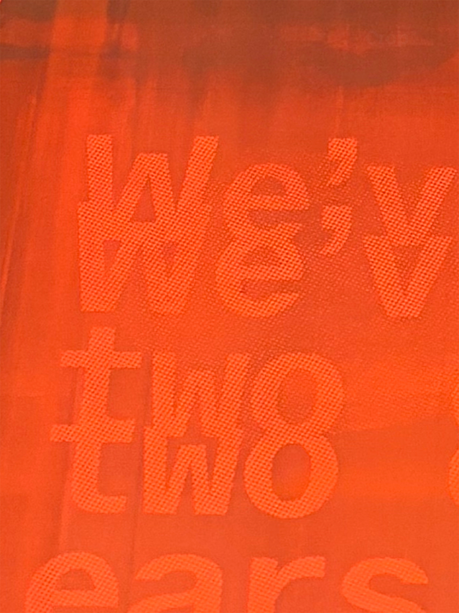
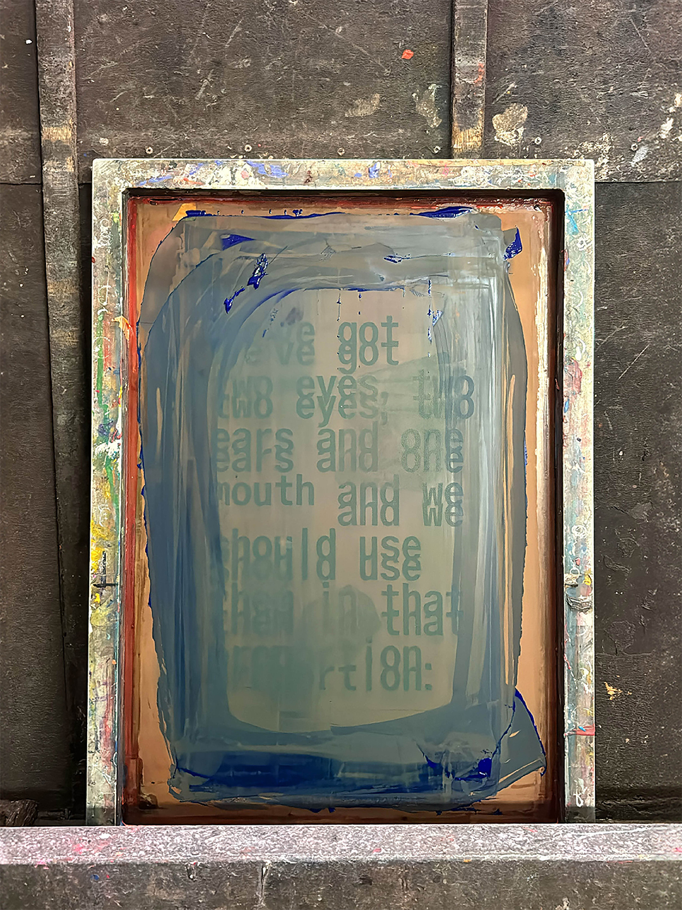
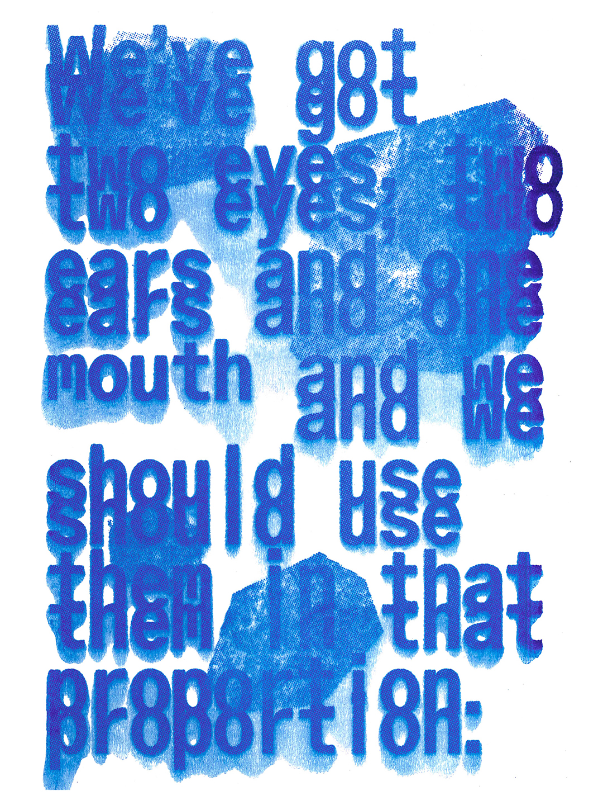
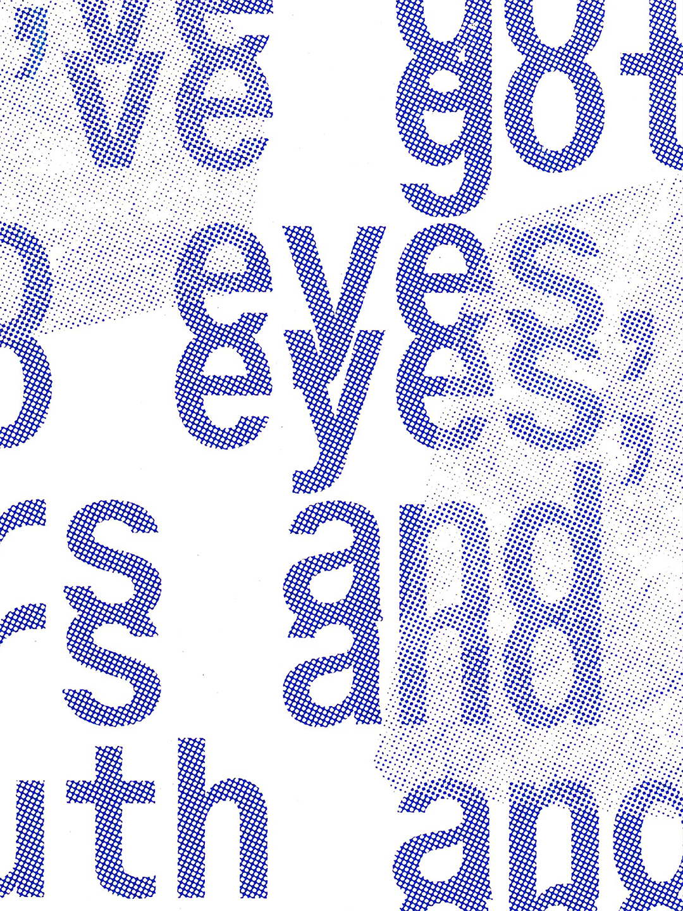
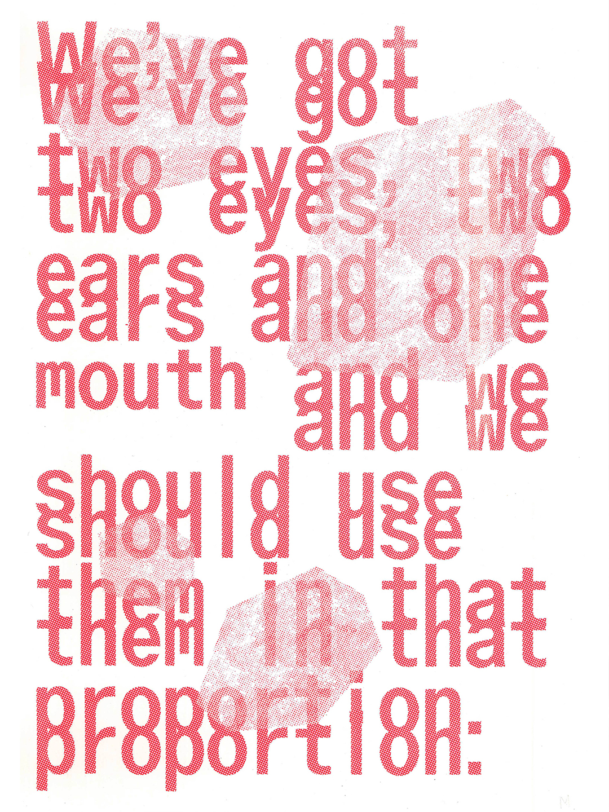
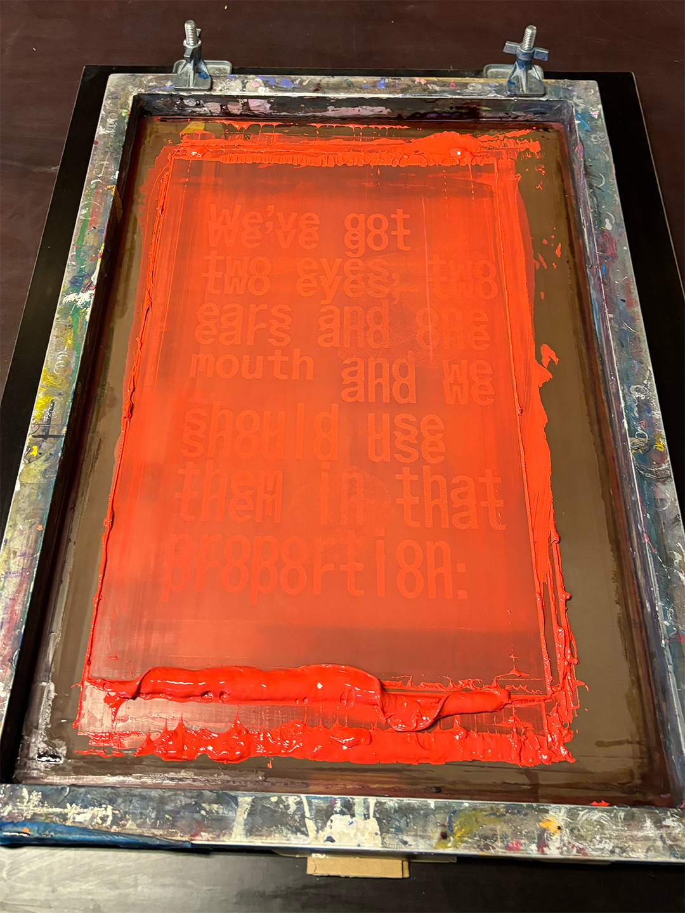

MfG
SEP
Sences Poster
Great quote from the British designer Ilse Crawford. «We’ve got two eyes, two ears and one mouth and we should use them in that proportion.» In times of sensory overload due to the internet and global crises, it is important not to forget our human senses.





